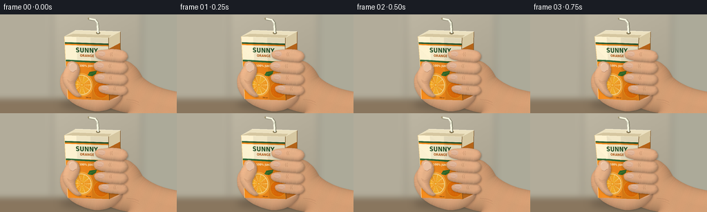
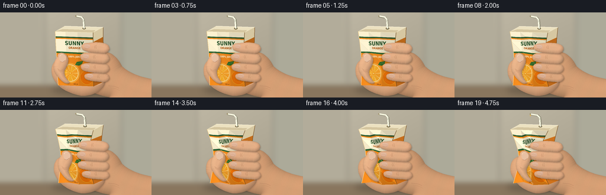

CODING AGENTS AS PIXEL WORLD MODELS
traex/GPT-6.1-Sol · mechanics_0019
点击播放 · 原生 RGB 像素
逐轮保存的候选
回放视频、检查图与代码变化。
每份候选均可单独播放。实际图片检查记录在下方工具轨迹中。
候选 01播放与检查图
点击播放 · 原生 RGB 像素


展开代码变化
--- 上一保存版本
+++ 本次保存版本
@@ -0,0 +1,238 @@
+from pathlib import Path
+import math, json
+import numpy as np
+from PIL import Image, ImageDraw, ImageFont, ImageFilter
+from scipy.ndimage import distance_transform_edt, gaussian_filter, map_coordinates
+import artifact_io
+
+ROOT=Path(__file__).resolve().parent
+S=3; W=256*S; H=144*S
+rng=np.random.default_rng(41)
+Y,X=np.mgrid[:H,:W]; xx=X/S; yy=Y/S
+noise=rng.normal(0,1,(H,W))
+FONT='/usr/share/fonts/truetype/dejavu/DejaVuSansCondensed-Bold.ttf'
+
+def pts(p): return [(x*S,y*S) for x,y in p]
+def bezier(path):
+ result=[path[0]]; p=np.array(path[0],float)
+ for a,b,c in path[1:]:
+ a,b,c=map(lambda q:np.array(q,float),(a,b,c))
+ for t in np.linspace(0,1,18)[1:]:result.append(tuple((1-t)**3*p+3*(1-t)**2*t*a+3*(1-t)*t*t*b+t**3*c))
+ p=c
+ return result
+
+def poly_mask(points):
+ m=Image.new('L',(W,H)); ImageDraw.Draw(m).polygon(pts(points),fill=255)
+ return m
+
+def line(im,points,fill,width=1):
+ ImageDraw.Draw(im).line(pts(points),fill=fill,width=max(1,round(width*S)),joint='curve')
+
+# Softly out-of-focus kitchen, with an uninterrupted light neutral backdrop.
+bg=np.zeros((H,W,3),float)
+for k,c in enumerate([170,163,144]):bg[:,:,k]=c+15*(1-yy/144)+6*np.cos(xx/84)
+bg+=noise[:,:,None]*.6
+bg=Image.fromarray(np.uint8(np.clip(bg,0,255)))
+d=ImageDraw.Draw(bg)
+d.rectangle((0,0,70*S,119*S),fill=(178,172,154))
+d.rectangle((74*S,0,77*S,121*S),fill=(158,153,138))
+d.rectangle((204*S,0,207*S,123*S),fill=(154,152,138))
+d.rectangle((208*S,0,W,122*S),fill=(172,170,153))
+d.rectangle((0,124*S,W,H),fill=(137,118,94))
+d.line((0,124*S,W,124*S),fill=(116,103,85),width=2*S)
+bg=bg.filter(ImageFilter.GaussianBlur(4*S))
+
+# Printed, orange-flavoured single-serve juice carton texture.
+TW,TH=420,600
+TX,TY=np.meshgrid(np.arange(TW),np.arange(TH))
+tex=np.zeros((TH,TW,3),float)
+for k,c in enumerate([241,137,28]): tex[:,:,k]=c+5*np.sin(TX/70)+rng.normal(0,.65,(TH,TW))
+tex=Image.fromarray(np.uint8(np.clip(tex,0,255))); td=ImageDraw.Draw(tex)
+td.rectangle((0,0,TW,54),fill=(251,240,207))
+td.rectangle((0,55,TW,68),fill=(40,91,50))
+td.rectangle((0,82,TW,225),fill=(250,240,207))
+td.polygon([(0,222),(420,231),(420,247),(0,238)],fill=(46,104,56))
+def txt(text,y,size,col):
+ f=ImageFont.truetype(FONT,size); bb=td.textbbox((0,0),text,font=f)
+ td.text(((TW-(bb[2]-bb[0]))/2,y),text,font=f,fill=col)
+txt('SUNNY',91,61,(37,82,41)); txt('ORANGE',160,32,(182,88,20)); txt('100% JUICE',259,27,(255,251,226))
+# Fine citrus rind and juicy radial segments printed low on the label.
+td.ellipse((39,348,259,568),fill=(235,99,9),outline=(255,184,60),width=9)
+td.ellipse((50,360,247,557),fill=(255,215,128))
+for a in range(10):
+ ang=a*2*math.pi/10
+ poly=[(149,459)]
+ for q in np.linspace(ang+.04,ang+2*math.pi/10-.04,12):poly.append((149+88*math.cos(q),459+88*math.sin(q)))
+ td.polygon(poly,fill=(249,160+int(a%3)*7,39))
+ for j in range(3):
+ q=ang+.2; r=28+j*19
+ td.ellipse((149+r*math.cos(q)-3,459+r*math.sin(q)-4,149+r*math.cos(q)+3,459+r*math.sin(q)+4),fill=(255,189,73))
+td.ellipse((145,455,154,464),fill=(255,230,173))
+td.polygon([(209,367),(230,332),(301,320),(291,350),(255,374)],fill=(51,108,43))
+td.line([(216,363),(291,331)],fill=(112,150,51),width=3)
+td.ellipse((264,427,418,581),fill=(239,114,9),outline=(255,178,33),width=3)
+for i in range(230):
+ px=rng.integers(275,405); py=rng.integers(438,565)
+ if ((px-341)/75)**2+((py-504)/75)**2<1:td.ellipse((px,py,px+1.8,py+2.3),fill=(249,146,25))
+txt('200 ml',572,15,(116,63,18))
+texture=np.array(tex,dtype=float)
+
+# Rasterize deforming paperboard as triangles. The label really folds with it.
+def triangle(im, dest, uv, shade):
+ dest=np.array(dest)*S; uv=np.array(uv)
+ x0=max(0,int(np.floor(dest[:,0].min()))); x1=min(W,int(np.ceil(dest[:,0].max()))+1)
+ y0=max(0,int(np.floor(dest[:,1].min()))); y1=min(H,int(np.ceil(dest[:,1].max()))+1)
+ gy,gx=np.mgrid[y0:y1,x0:x1]
+ mat=np.column_stack((dest[1]-dest[0],dest[2]-dest[0]))
+ if abs(np.linalg.det(mat))<.01:return
+ v=np.linalg.inv(mat)@np.array([gx.ravel()-dest[0,0],gy.ravel()-dest[0,1]])
+ a,b=v; inside=(a>=-1e-5)&(b>=-1e-5)&(a+b<=1.00001)
+ sample=uv[0,:,None]+(uv[1]-uv[0])[:,None]*a+(uv[2]-uv[0])[:,None]*b
+ colors=np.stack([map_coordinates(texture[:,:,c],[sample[1]*(TH-1),sample[0]*(TW-1)],order=1,mode='nearest') for c in range(3)],axis=1)
+ colors=colors*shade+noise[gy,gx].ravel()[:,None]*.5
+ target=im[y0:y1,x0:x1].reshape(-1,3).copy();target[inside]=colors[inside]
+ im[y0:y1,x0:x1]=target.reshape(y1-y0,x1-x0,3)
+
+def shadow(im,mask,amount=.25,offset=(1,1),blur=1.2):
+ m=Image.new('L',(W,H));m.paste(mask,(int(offset[0]*S),int(offset[1]*S)))
+ alpha=np.array(m.filter(ImageFilter.GaussianBlur(blur*S)),float)/255*amount
+ return Image.fromarray(np.uint8(np.clip(np.array(im)*(1-alpha[:,:,None]),0,255)))
+
+def skin(im,points,radius=9,base=(220,166,126),shade_amount=.24):
+ mask=poly_mask(points)
+ im=shadow(im,mask,shade_amount,(.7,1.2),1.0)
+ m=np.array(mask)/255
+ dist=distance_transform_edt(m)/S
+ dy,dx=np.gradient(gaussian_filter(dist,1.0)); dx*=S;dy*=S
+ zz=np.sqrt(np.clip(1-(1-np.minimum(dist/radius,1))**2,0,1))
+ bright=.77+.24*zz+.105*(dx+dy)*np.sqrt(np.maximum(0,1-zz**2))
+ flesh=np.array(base)[None,None,:]*bright[:,:,None]
+ flesh+=noise[:,:,None]*1.25
+ flesh[:,:,0]+=1.5*np.sin(xx*.25+yy*.12)
+ a=m[:,:,None]
+ return Image.fromarray(np.uint8(np.clip(np.array(im)*(1-a)+flesh*a,0,255)))
+
+def render(i):
+ t=i/19; p=t**1.12; pressure=p
+ # A tiny natural downward shift accompanies the grip, no cut or zoom.
+ ox=1.2*p; oy=1.0*p
+ im=bg.copy()
+ # Soft hovering/contact shadow over the counter.
+ sm=Image.new('L',(W,H)); sd=ImageDraw.Draw(sm);sd.ellipse((87*S,121*S,225*S,141*S),fill=95)
+ im=shadow(im,sm,.48,(0,0),5)
+ # Back of palm and forearm remain behind the carton.
+ palm=bezier([(162,67),((184,62),(198,74),(206,91)),((220,104),(240,111),(267,114)),((271,128),(271,149),(259,151)),((227,151),(185,147),(158,136)),((141,127),(140,107),(147,88)),((149,77),(154,71),(162,67))])
+ im=skin(im,palm,25,(211,157,115),.12)
+ # Wrapping thumb root behind the near edge.
+ root=bezier([(113+6*p,78),((93+8*p,76),(84+8*p,88),(88+7*p,106)),((92+8*p,121),(108+5*p,136),(137,141)),((160,143),(179,128),(178,116)),((152,112),(123,103),(113+6*p,78))])
+ im=skin(im,root,18,(222,167,125),.14)
+ # Carton mesh and angular pleats.
+ levels=[0,.18,.37,.55,.77,1]
+ cols=[0,.27,.59,1]
+ vertices=[]
+ for j,v in enumerate(levels):
+ waist=math.sin(math.pi*v)**1.1
+ l=93+5*v+12*p*waist+ox
+ r=157+1*v-17*p*waist+ox
+ row=[]
+ for k,u in enumerate(cols):
+ x=l+(r-l)*u
+ y=32+91*v+2*u+oy
+ if k in (1,2):
+ x+=p*[0,2,-3,0][k]*math.sin(j*1.8)
+ y+=p*[0,3,-2,0][k]*math.sin(j*2.1)
+ row.append((x,y))
+ vertices.append(row)
+ right=[]
+ for j,v in enumerate(levels):
+ right.append((174+v-9*p*math.sin(math.pi*v)+ox,25+92*v+2*p*math.sin(v*7)+oy))
+ # Right side, shaded orange with vertical seam and slight buckling.
+ sidepoints=[row[-1] for row in vertices]+right[::-1]
+ sd=ImageDraw.Draw(im);sd.polygon(pts(sidepoints),fill=(168,95,24))
+ for j in range(5):
+ a,b=vertices[j][-1],vertices[j+1][-1];c,e=right[j+1],right[j]
+ tone=1+p*.16*math.sin(j*2)
+ sd.polygon(pts([a,b,c,e]),fill=tuple(int(z*tone) for z in (179,99,25)))
+ if j==0:sd.polygon(pts([a,b,c,e]),fill=(214,199,161))
+ line(im,[right[j] for j in range(6)],(119,78,33),.7)
+ # Narrow printed barcode on side.
+ for k in range(9):
+ x=162+k*.95+ox-3*p
+ line(im,[(x,103+oy),(x+.5,113+oy)],(76,59,29),.3 if k%3 else .7)
+ arr=np.array(im,dtype=float)
+ for j in range(5):
+ for k in range(3):
+ a=vertices[j][k];b=vertices[j][k+1];c=vertices[j+1][k+1];e=vertices[j+1][k]
+ uv=[(cols[k],levels[j]),(cols[k+1],levels[j]),(cols[k+1],levels[j+1]),(cols[k],levels[j+1])]
+ vshade=1.01-.055*k
+ fold=p*.11*math.sin(j*2.5+k*1.8)
+ triangle(arr,[a,b,c],[uv[0],uv[1],uv[2]],vshade+fold)
+ triangle(arr,[a,c,e],[uv[0],uv[2],uv[3]],vshade-fold*.6)
+ im=Image.fromarray(np.uint8(np.clip(arr,0,255)))
+ top=[vertices[0][0],vertices[0][-1],right[0],(109+ox,23+oy)]
+ sd=ImageDraw.Draw(im);sd.polygon(pts(top),fill=(236,225,192))
+ sd.polygon(pts([vertices[0][0],vertices[0][-1],(161+ox,30+oy),(106+ox,28+oy)]),fill=(213,198,160))
+ line(im,[(109+ox,23+oy),right[0]],(250,242,216),1)
+ line(im,[vertices[0][0],vertices[0][-1]],(255,244,204),.6)
+ # Folded paperboard creases become increasingly deep under sustained pressure.
+ if p>.05:
+ crease=Image.new('RGBA',(W,H));cd=ImageDraw.Draw(crease)
+ for j,k in [(1,0),(2,1),(3,0),(4,1),(3,2)]:
+ a=vertices[j][k];b=vertices[min(j+1,5)][min(k+1,3)]
+ cd.line(pts([a,b]),fill=(96,50,9,int(55*p)),width=S)
+ cd.line(pts([(a[0]-.6,a[1]-1),(b[0]-.6,b[1]-1)]),fill=(255,245,207,int(90*p)),width=S)
+ im=Image.alpha_composite(im.convert('RGBA'),crease).convert('RGB')
+ line(im,[r[0] for r in vertices],(249,214,147),.6)
+ line(im,[r[-1] for r in vertices],(106,71,29),.5)
+ # Attached drinking straw: fine rounded ridges at the elbow.
+ strawx=142+ox+2*p;strawy=27+oy
+ sd=ImageDraw.Draw(im);sd.ellipse(pts([(strawx-3,strawy-1.6),(strawx+3,strawy+1.6)]),fill=(122,106,69))
+ straw=[(strawx,strawy),(strawx-1,12+oy),(strawx-4-p,8+oy),(strawx-14-p*3,6+oy)]
+ line(im,[(x+.6,y+.5) for x,y in straw],(117,115,95),3.4)
+ line(im,straw,(244,243,218),2.8)
+ line(im,[(x-.6,y-.3) for x,y in straw],(255,254,239),.65)
+ for j in range(5):line(im,[(strawx-2.1,12.5+j*.85+oy),(strawx+.2,12.4+j*.85+oy)],(184,185,164),.32)
+ sd=ImageDraw.Draw(im);sd.ellipse(pts([(strawx-15-3*p,4.9+oy),(strawx-13-3*p,7.1+oy)]),fill=(161,148,111))
+ # Four fingers curl progressively farther around the right wall, compressing it.
+ for f in range(3,-1,-1):
+ cy=[59,76,93,109][f]+oy + [1,.5,-.3,-1][f]*p
+ tip=[141,139,140,146][f]-[11,12,11,9][f]*p+ox
+ end=183-[2,2,1,0][f]*p
+ rad=[7.2,7.7,7.1,6][f]
+ finger=bezier([(tip+7,cy-rad),((tip+20,cy-rad-2),(end-5,cy-rad-2),(end,cy-3)),((end+6,cy+4),(end-2,cy+rad+4),(end-10,cy+rad+3)),((tip+17,cy+rad+2),(tip-2,cy+rad+1),(tip-3,cy+1)),((tip-5,cy-4),(tip,cy-rad),(tip+7,cy-rad))])
+ im=skin(im,finger,rad,(226-f*3,173-f*3,133-f*3),.24)
+ sd=ImageDraw.Draw(im)
+ # The softly translucent nails face partly toward camera at the curled tips.
+ nail=bezier([(tip+1,cy-4),((tip+3,cy-5.8),(tip+9,cy-5.8),(tip+11,cy-3.7)),((tip+12,cy-1),(tip+11,cy+2),(tip+8,cy+2.2)),((tip+4,cy+2),(tip+1,cy+1),(tip+1,cy-4))])
+ sd.polygon(pts(nail),fill=(223-f*2,179-f*2,151-f*2))
+ line(im,[(tip+2,cy-3.7),(tip+7,cy-4.2),(tip+10,cy-3)],(245,213,184),.55)
+ line(im,[(tip+2,cy+1),(tip+7,cy+2.0),(tip+10,cy+.5)],(176,125,95),.4)
+ # Flexion wrinkles at the two bent knuckles.
+ for z in range(2):
+ kx=tip+20+z*2.2
+ line(im,[(kx,cy-4),(kx-1.3,cy-1),(kx-.4,cy+2)],(175-f*2,123-f*2,88-f*2),.38)
+ line(im,[(kx+.8,cy-4),(kx-.5,cy-1)],(237,187,146),.3)
+ # Opposing thumb runs up the left face and presses the carton inward.
+ bx=103+12*p+ox;by=79+oy
+ thumb=bezier([(bx-6,by-4),((bx-6,by-11),(bx+2,by-13),(bx+8,by-8)),((bx+15,by-2),(bx+13,by+8),(bx+7,by+17)),((bx+3,by+26),(bx+9,by+33),(bx+15,by+40)),((bx+7,by+46),(bx-6,by+31),(bx-11,by+20)),((bx-14,by+8),(bx-10,by+2),(bx-6,by-4))])
+ im=skin(im,thumb,9,(228,175,134),.26)
+ nail=bezier([(bx-3,by-6),((bx+1,by-11),(bx+5,by-9),(bx+8,by-5)),((bx+10,by-1),(bx+7,by+4),(bx+4,by+5)),((bx,by+5),(bx-4,by+2),(bx-3,by-6))])
+ sd=ImageDraw.Draw(im);sd.polygon(pts(nail),fill=(232,192,162))
+ line(im,[(bx-2,by-5),(bx,by-7.5),(bx+3,by-8)],(250,220,192),.65)
+ line(im,[(bx-1,by+4),(bx+3,by+5),(bx+7,by+2)],(184,133,103),.5)
+ for z in range(3):line(im,[(bx-6+z*.8,by+16+z*1.6),(bx-1,by+19+z*1.5),(bx+4,by+17+z*1.8)],(184,132,96),.42)
+ # Subtle palm and wrist creases, not heavy outlined illustration.
+ line(im,[(183,124),(194,125),(201,128)],(177,127,94),.45)
+ line(im,[(186,127),(196,129),(202,132)],(190,141,103),.4)
+ # High pressure is held in the final frames; the straw carries a small bead.
+ if p>.82:
+ r=(p-.82)*5
+ sd=ImageDraw.Draw(im); x=strawx-14-3*p; y=7.5+oy+r
+ sd.ellipse(pts([(x-r*.6,y-r),(x+r*.6,y+r)]),fill=(234,166,40))
+ sd.ellipse(pts([(x-r*.25,y-r*.7),(x+r*.1,y-r*.2)]),fill=(255,234,161))
+ # Downsampling integrates texture, shading and edge antialiasing.
+ return np.array(im.resize((256,144),Image.Resampling.LANCZOS),dtype=np.uint8)
+
+if __name__=='__main__':
+ frames=np.stack([render(i) for i in range(20)])
+ artifact_io.save(frames,ROOT)
可观测工具轨迹
实际执行的命令与返回图片。
命令 1exit 0
/bin/bash -lc 'ls -la; cat prompt.txt; cat GENERATION_RULES.md; cat task_spec.json'
命令 2exit 0
/bin/bash -lc "cat artifact_io.py; python - <<'PY' import importlib.util for x in ['numpy','PIL','scipy']: print(x, bool(importlib.util.find_spec(x))) PY"
命令 3exit 0
/bin/bash -lc 'fc-list | head -15'
命令 4exit 0
/bin/bash -lc "cat > generate.py <<'PY'
from pathlib import Path
import math, json
import numpy as np
from PIL import Image, ImageDraw, ImageFont, ImageFilter
from scipy.ndimage import distance_transform_edt, gaussian_filter, map_coordinates
import artifact_io
ROOT=Path(__file__).resolve().parent
S=3; W=256*S; H=144*S
rng=np.random.default_rng(41)
Y,X=np.mgrid[:H,:W]; xx=X/S; yy=Y/S
noise=rng.normal(0,1,(H,W))
FONT='/usr/share/fonts/truetype/dejavu/DejaVuSansCondensed-Bold.ttf'
def pts(p): return [(x*S,y*S) for x,y in p]
def bezier(path):
result=[path[0]]; p=np.array(path[0],float)
for a,b,c in path[1:]:
a,b,c=map(lambda q:np.array(q,float),(a,b,c))
for t in np.linspace(0,1,18)[1:]:result.append(tuple((1-t)**3*p+3*(1-t)**2*t*a+3*(1-t)*t*t*b+t**3*c))
p=c
return result
def poly_mask(points):
m=Image.new('L',(W,H)); ImageDraw.Draw(m).polygon(pts(points),fill=255)
return m
def line(im,points,fill,width=1):
ImageDraw.Draw(im).line(pts(points),fill=fill,width=max(1,round(width*S)),joint='curve')
# Softly out-of-focus kitchen, with an uninterrupted light neutral backdrop.
bg=np.zeros((H,W,3),float)
for k,c in enumerate([170,163,144]):bg[:,:,k]=c+15*(1-yy/144)+6*np.cos(xx/84)
bg+=noise[:,:,None]*.6
bg=Image.fromarray(np.uint8(np.clip(bg,0,255)))
d=ImageDraw.Draw(bg)
d.rectangle((0,0,70*S,119*S),fill=(178,172,154))
d.rectangle((74*S,0,77*S,121*S),fill=(158,153,138))
d.rectangle((204*S,0,207*S,123*S),fill=(154,152,138))
d.rectangle((208*S,0,W,122*S),fill=(172,170,153))
d.rectangle((0,124*S,W,H),fill=(137,118,94))
d.line((0,124*S,W,124*S),fill=(116,103,85),width=2*S)
bg=bg.filter(ImageFilter.GaussianBlur(4*S))
# Printed, orange-flavoured single-serve juice carton texture.
TW,TH=420,600
TX,TY=np.meshgrid(np.arange(TW),np.arange(TH))
tex=np.zeros((TH,TW,3),float)
for k,c in enumerate([241,137,28]): tex[:,:,k]=c+5*np.sin(TX/70)+rng.normal(0,.65,(TH,TW))
tex=Image.fromarray(np.uint8(np.clip(tex,0,255))); td=ImageDraw.Draw(tex)
td.rectangle((0,0,TW,54),fill=(251,240,207))
td.rectangle((0,55,TW,68),fill=(40,91,50))
td.rectangle((0,82,TW,225),fill=(250,240,207))
td.polygon([(0,222),(420,231),(420,247),(0,238)],fill=(46,104,56))
def txt(text,y,size,col):
f=ImageFont.truetype(FONT,size); bb=td.textbbox((0,0),text,font=f)
td.text(((TW-(bb[2]-bb[0]))/2,y),text,font=f,fill=col)
txt('SUNNY',91,61,(37,82,41)); txt('ORANGE',160,32,(182,88,20)); txt('100% JUICE',259,27,(255,251,226))
# Fine citrus rind and juicy radial segments printed low on the label.
td.ellipse((39,348,259,568),fill=(235,99,9),outline=(255,184,60),width=9)
td.ellipse((50,360,247,557),fill=(255,215,128))
for a in range(10):
ang=a*2*math.pi/10
poly=[(149,459)]
for q in np.linspace(ang+.04,ang+2*math.pi/10-.04,12):poly.append((149+88*math.cos(q),459+88*math.sin(q)))
td.polygon(poly,fill=(249,160+int(a%3)*7,39))
for j in range(3):
q=ang+.2; r=28+j*19
td.ellipse((149+r*math.cos(q)-3,459+r*math.sin(q)-4,149+r*math.cos(q)+3,459+r*math.sin(q)+4),fill=(255,189,73))
td.ellipse((145,455,154,464),fill=(255,230,173))
td.polygon([(209,367),(230,332),(301,320),(291,350),(255,374)],fill=(51,108,43))
td.line([(216,363),(291,331)],fill=(112,150,51),width=3)
td.ellipse((264,427,418,581),fill=(239,114,9),outline=(255,178,33),width=3)
for i in range(230):
px=rng.integers(275,405); py=rng.integers(438,565)
if ((px-341)/75)**2+((py-504)/75)**2<1:td.ellipse((px,py,px+1.8,py+2.3),fill=(249,146,25))
txt('200 ml',572,15,(116,63,18))
texture=np.array(tex,dtype=float)
# Rasterize deforming paperboard as triangles. The label really folds with it.
def triangle(im, dest, uv, shade):
dest=np.array(dest)*S; uv=np.array(uv)
x0=max(0,int(np.floor(dest[:,0].min()))); x1=min(W,int(np.ceil(dest[:,0].max()))+1)
y0=max(0,int(np.floor(dest[:,1].min()))); y1=min(H,int(np.ceil(dest[:,1].max()))+1)
gy,gx=np.mgrid[y0:y1,x0:x1]
mat=np.column_stack((dest[1]-dest[0],dest[2]-dest[0]))
if abs(np.linalg.det(mat))<.01:return
v=np.linalg.inv(mat)@np.array([gx.ravel()-dest[0,0],gy.ravel()-dest[0,1]])
a,b=v; inside=(a>=-1e-5)&(b>=-1e-5)&(a+b<=1.00001)
sample=uv[0,:,None]+(uv[1]-uv[0])[:,None]*a+(uv[2]-uv[0])[:,None]*b
colors=np.stack([map_coordinates(texture[:,:,c],[sample[1]*(TH-1),sample[0]*(TW-1)],order=1,mode='nearest') for c in range(3)],axis=1)
colors=colors*shade+noise[gy,gx].ravel()[:,None]*.5
target=im[y0:y1,x0:x1].reshape(-1,3).copy();target[inside]=colors[inside]
im[y0:y1,x0:x1]=target.reshape(y1-y0,x1-x0,3)
def shadow(im,mask,amount=.25,offset=(1,1),blur=1.2):
m=Image.new('L',(W,H));m.paste(mask,(int(offset[0]*S),int(offset[1]*S)))
alpha=np.array(m.filter(ImageFilter.GaussianBlur(blur*S)),float)/255*amount
return Image.fromarray(np.uint8(np.clip(np.array(im)*(1-alpha[:,:,None]),0,255)))
def skin(im,points,radius=9,base=(220,166,126),shade_amount=.24):
mask=poly_mask(points)
im=shadow(im,mask,shade_amount,(.7,1.2),1.0)
m=np.array(mask)/255
dist=distance_transform_edt(m)/S
dy,dx=np.gradient(gaussian_filter(dist,1.0)); dx*=S;dy*=S
zz=np.sqrt(np.clip(1-(1-np.minimum(dist/radius,1))**2,0,1))
bright=.77+.24*zz+.105*(dx+dy)*np.sqrt(np.maximum(0,1-zz**2))
flesh=np.array(base)[None,None,:]*bright[:,:,None]
flesh+=noise[:,:,None]*1.25
flesh[:,:,0]+=1.5*np.sin(xx*.25+yy*.12)
a=m[:,:,None]
return Image.fromarray(np.uint8(np.clip(np.array(im)*(1-a)+flesh*a,0,255)))
def render(i):
t=i/19; p=t**1.12; pressure=p
# A tiny natural downward shift accompanies the grip, no cut or zoom.
ox=1.2*p; oy=1.0*p
im=bg.copy()
# Soft hovering/contact shadow over the counter.
sm=Image.new('L',(W,H)); sd=ImageDraw.Draw(sm);sd.ellipse((87*S,121*S,225*S,141*S),fill=95)
im=shadow(im,sm,.48,(0,0),5)
# Back of palm and forearm remain behind the carton.
palm=bezier([(162,67),((184,62),(198,74),(206,91)),((220,104),(240,111),(267,114)),((271,128),(271,149),(259,151)),((227,151),(185,147),(158,136)),((141,127),(140,107),(147,88)),((149,77),(154,71),(162,67))])
im=skin(im,palm,25,(211,157,115),.12)
# Wrapping thumb root behind the near edge.
root=bezier([(113+6*p,78),((93+8*p,76),(84+8*p,88),(88+7*p,106)),((92+8*p,121),(108+5*p,136),(137,141)),((160,143),(179,128),(178,116)),((152,112),(123,103),(113+6*p,78))])
im=skin(im,root,18,(222,167,125),.14)
# Carton mesh and angular pleats.
levels=[0,.18,.37,.55,.77,1]
cols=[0,.27,.59,1]
vertices=[]
for j,v in enumerate(levels):
waist=math.sin(math.pi*v)**1.1
l=93+5*v+12*p*waist+ox
r=157+1*v-17*p*waist+ox
row=[]
for k,u in enumerate(cols):
x=l+(r-l)*u
y=32+91*v+2*u+oy
if k in (1,2):
x+=p*[0,2,-3,0][k]*math.sin(j*1.8)
y+=p*[0,3,-2,0][k]*math.sin(j*2.1)
row.append((x,y))
vertices.append(row)
right=[]
for j,v in enumerate(levels):
right.append((174+v-9*p*math.sin(math.pi*v)+ox,25+92*v+2*p*math.sin(v*7)+oy))
# Right side, shaded orange with vertical seam and slight buckling.
sidepoints=[row[-1] for row in vertices]+right[::-1]
sd=ImageDraw.Draw(im);sd.polygon(pts(sidepoints),fill=(168,95,24))
for j in range(5):
a,b=vertices[j][-1],vertices[j+1][-1];c,e=right[j+1],right[j]
tone=1+p*.16*math.sin(j*2)
sd.polygon(pts([a,b,c,e]),fill=tuple(int(z*tone) for z in (179,99,25)))
if j==0:sd.polygon(pts([a,b,c,e]),fill=(214,199,161))
line(im,[right[j] for j in range(6)],(119,78,33),.7)
# Narrow printed barcode on side.
for k in range(9):
x=162+k*.95+ox-3*p
line(im,[(x,103+oy),(x+.5,113+oy)],(76,59,29),.3 if k%3 else .7)
arr=np.array(im,dtype=float)
for j in range(5):
for k in range(3):
a=vertices[j][k];b=vertices[j][k+1];c=vertices[j+1][k+1];e=vertices[j+1][k]
uv=[(cols[k],levels[j]),(cols[k+1],levels[j]),(cols[k+1],levels[j+1]),(cols[k],levels[j+1])]
vshade=1.01-.055*k
fold=p*.11*math.sin(j*2.5+k*1.8)
triangle(arr,[a,b,c],[uv[0],uv[1],uv[2]],vshade+fold)
triangle(arr,[a,c,e],[uv[0],uv[2],uv[3]],vshade-fold*.6)
im=Image.fromarray(np.uint8(np.clip(arr,0,255)))
top=[vertices[0][0],vertices[0][-1],right[0],(109+ox,23+oy)]
sd=ImageDraw.Draw(im);sd.polygon(pts(top),fill=(236,225,192))
sd.polygon(pts([vertices[0][0],vertices[0][-1],(161+ox,30+oy),(106+ox,28+oy)]),fill=(213,198,160))
line(im,[(109+ox,23+oy),right[0]],(250,242,216),1)
line(im,[vertices[0][0],vertices[0][-1]],(255,244,204),.6)
# Folded paperboard creases become increasingly deep under sustained pressure.
if p>.05:
crease=Image.new('RGBA',(W,H));cd=ImageDraw.Draw(crease)
for j,k in [(1,0),(2,1),(3,0),(4,1),(3,2)]:
a=vertices[j][k];b=vertices[min(j+1,5)][min(k+1,3)]
cd.line(pts([a,b]),fill=(96,50,9,int(55*p)),width=S)
cd.line(pts([(a[0]-.6,a[1]-1),(b[0]-.6,b[1]-1)]),fill=(255,245,207,int(90*p)),width=S)
im=Image.alpha_composite(im.convert('RGBA'),crease).convert('RGB')
line(im,[r[0] for r in vertices],(249,214,147),.6)
line(im,[r[-1] for r in vertices],(106,71,29),.5)
# Attached drinking straw: fine rounded ridges at the elbow.
strawx=142+ox+2*p;strawy=27+oy
sd=ImageDraw.Draw(im);sd.ellipse(pts([(strawx-3,strawy-1.6),(strawx+3,strawy+1.6)]),fill=(122,106,69))
straw=[(strawx,strawy),(strawx-1,12+oy),(strawx-4-p,8+oy),(strawx-14-p*3,6+oy)]
line(im,[(x+.6,y+.5) for x,y in straw],(117,115,95),3.4)
line(im,straw,(244,243,218),2.8)
line(im,[(x-.6,y-.3) for x,y in straw],(255,254,239),.65)
for j in range(5):line(im,[(strawx-2.1,12.5+j*.85+oy),(strawx+.2,12.4+j*.85+oy)],(184,185,164),.32)
sd=ImageDraw.Draw(im);sd.ellipse(pts([(strawx-15-3*p,4.9+oy),(strawx-13-3*p,7.1+oy)]),fill=(161,148,111))
# Four fingers curl progressively farther around the right wall, compressing it.
for f in range(3,-1,-1):
cy=[59,76,93,109][f]+oy + [1,.5,-.3,-1][f]*p
tip=[141,139,140,146][f]-[11,12,11,9][f]*p+ox
end=183-[2,2,1,0][f]*p
rad=[7.2,7.7,7.1,6][f]
finger=bezier([(tip+7,cy-rad),((tip+20,cy-rad-2),(end-5,cy-rad-2),(end,cy-3)),((end+6,cy+4),(end-2,cy+rad+4),(end-10,cy+rad+3)),((tip+17,cy+rad+2),(tip-2,cy+rad+1),(tip-3,cy+1)),((tip-5,cy-4),(tip,cy-rad),(tip+7,cy-rad))])
im=skin(im,finger,rad,(226-f*3,173-f*3,133-f*3),.24)
sd=ImageDraw.Draw(im)
# The softly translucent nails face partly toward camera at the curled tips.
nail=bezier([(tip+1,cy-4),((tip+3,cy-5.8),(tip+9,cy-5.8),(tip+11,cy-3.7)),((tip+12,cy-1),(tip+11,cy+2),(tip+8,cy+2.2)),((tip+4,cy+2),(tip+1,cy+1),(tip+1,cy-4))])
sd.polygon(pts(nail),fill=(223-f*2,179-f*2,151-f*2))
line(im,[(tip+2,cy-3.7),(tip+7,cy-4.2),(tip+10,cy-3)],(245,213,184),.55)
line(im,[(tip+2,cy+1),(tip+7,cy+2.0),(tip+10,cy+.5)],(176,125,95),.4)
# Flexion wrinkles at the two bent knuckles.
for z in range(2):
kx=tip+20+z*2.2
line(im,[(kx,cy-4),(kx-1.3,cy-1),(kx-.4,cy+2)],(175-f*2,123-f*2,88-f*2),.38)
line(im,[(kx+.8,cy-4),(kx-.5,cy-1)],(237,187,146),.3)
# Opposing thumb runs up the left face and presses the carton inward.
bx=103+12*p+ox;by=79+oy
thumb=bezier([(bx-6,by-4),((bx-6,by-11),(bx+2,by-13),(bx+8,by-8)),((bx+15,by-2),(bx+13,by+8),(bx+7,by+17)),((bx+3,by+26),(bx+9,by+33),(bx+15,by+40)),((bx+7,by+46),(bx-6,by+31),(bx-11,by+20)),((bx-14,by+8),(bx-10,by+2),(bx-6,by-4))])
im=skin(im,thumb,9,(228,175,134),.26)
nail=bezier([(bx-3,by-6),((bx+1,by-11),(bx+5,by-9),(bx+8,by-5)),((bx+10,by-1),(bx+7,by+4),(bx+4,by+5)),((bx,by+5),(bx-4,by+2),(bx-3,by-6))])
sd=ImageDraw.Draw(im);sd.polygon(pts(nail),fill=(232,192,162))
line(im,[(bx-2,by-5),(bx,by-7.5),(bx+3,by-8)],(250,220,192),.65)
line(im,[(bx-1,by+4),(bx+3,by+5),(bx+7,by+2)],(184,133,103),.5)
for z in range(3):line(im,[(bx-6+z*.8,by+16+z*1.6),(bx-1,by+19+z*1.5),(bx+4,by+17+z*1.8)],(184,132,96),.42)
# Subtle palm and wrist creases, not heavy outlined illustration.
line(im,[(183,124),(194,125),(201,128)],(177,127,94),.45)
line(im,[(186,127),(196,129),(202,132)],(190,141,103),.4)
# High pressure is held in the final frames; the straw carries a small bead.
if p>.82:
r=(p-.82)*5
sd=ImageDraw.Draw(im); x=strawx-14-3*p; y=7.5+oy+r
sd.ellipse(pts([(x-r*.6,y-r),(x+r*.6,y+r)]),fill=(234,166,40))
sd.ellipse(pts([(x-r*.25,y-r*.7),(x+r*.1,y-r*.2)]),fill=(255,234,161))
# Downsampling integrates texture, shading and edge antialiasing.
return np.array(im.resize((256,144),Image.Resampling.LANCZOS),dtype=np.uint8)
if __name__=='__main__':
frames=np.stack([render(i) for i in range(20)])
artifact_io.save(frames,ROOT)
PY
python generate.py"命令 5exit 1
/bin/bash -lc "ls -lh pixels.npz index.html generate.py; python - <<'PY'
from pathlib import Path
import numpy as np
from PIL import Image
p=np.load('pixels.npz')['pixels']
assert p.shape==(144,256,20)
assert len(list(Path('frames').glob('*.png')))==20
assert Image.open('frames/00.png').mode=='RGB'
print('Verified: 20 RGB frames, 256Ã144, 4 fps.')
PY
command -v ffmpeg"视觉工具实际返回图片 1

保存候选 1 份；完成命令 5 次；可验证图片返回 1 张。原始 API 响应与完整日志保留在本地。